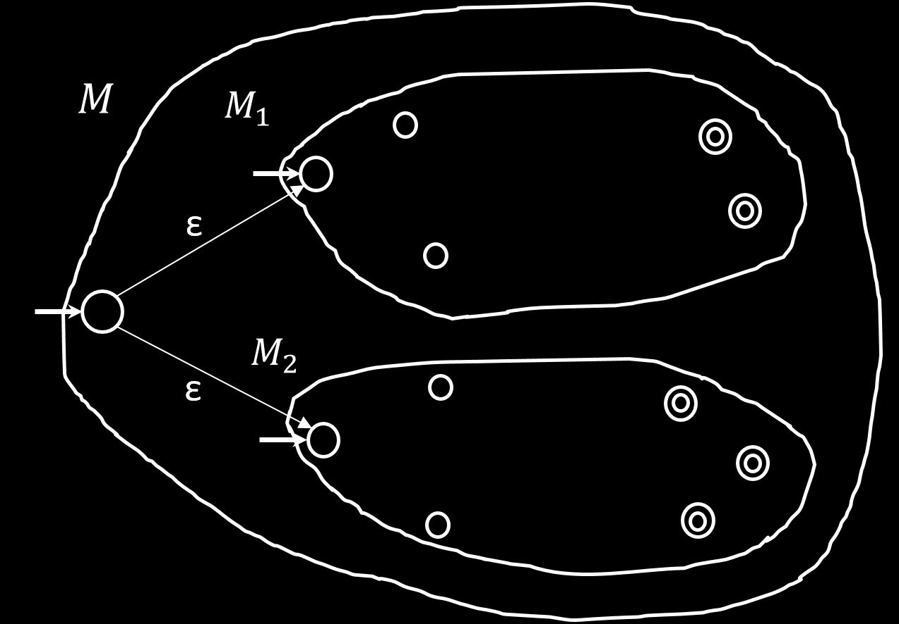

So far, we have been talking about deterministic finite automata (DFA)
A Nondeterministic finite automata (NFA) is essentially a DFA but we can have multiple transitions per string
Ways to think about the nondeterminism:
Computational: fork new parallel thread whenever you have multiple options and accept if any thread reaches accept
Mathematical: tree with branches and accept if any branch reaches accept
Magical: guess at each step which way to go, and a machine will always make a right guess that leads to accepting
An empty string ε automatically produces a fork (either you move along it or you don't)
A nondeterministic finite automaton N is a 5-tuple N=(Q,Σ,δ,q0,F)
Same as before except for δ
δ:Q×Σ∪{ε}Σε→power setP(Q)={R∣R⊆Q}
Power set of Q is the set of all subsets of Q
If A=L(N) for NFA N then A is regular
Proof:
Let N=(Q,Σ,δ,q0,F) and we wish to construct some DFA M=(Q′,Σ,δ′,q0′,F′). The idea is that we want to capture in our DFA all possible subsets that we could be at in N
Q′=(Q)=power set of Q
δ′(R,a)={q∣q∈δ(r,a) for some r∈R}
R∈Q′
Needs to be slightly modified to include empty transitions
q0′={q0}
F′={R∈Q′∣R∩F=∅}
Proving Closure Properties with NFAs
If A1,A2 are regular languages, so is A1∪A2
Proof:
We wish to construct an NFA M that accepts both A1 and A2
We just construct a new NFA such that it has a single starting state that has two outgoing ε transitions to start state of M1 and M2.

If A1,A2 are regular languages, so is A1∘A2
Proof:
We wish to construct an NFA M that accepts all inputs w=xy where x∈A1 and y∈A2
We include M1, and we make all accept states of M1 no longer accept. Then we add transitions with empty string from all of those to the start state of M2.
If A is a regular language, so is A∗
Proof:
We wish to construct an NFA M′ from M such that A=L(M) and A∗=L(M′)
We create a start state that leads to the start of M with a ε transition (this ensures that M′ accepts ε)
All accept states of M remain accept states but they all have a ε transition to the start of M
Given a regular expression R, we can make a corresponding NFA with the same langauge as R
Proof:
If R is atomic, we have the following easy NFAs we can make:
Σ could be considered as a single symbol, but it can also be done through composition of atomic expressions so it is fine to not include it
All compositions of atomic expressions with ∪,∘,∗ can all be made using the closure properties.
We've done (the easier) half of showing that regular expressions are equivalent to FAs
To prove that a DFA can be converted to a regular expression, we need another concept first: Generalized Nondeterministic Finite Automata